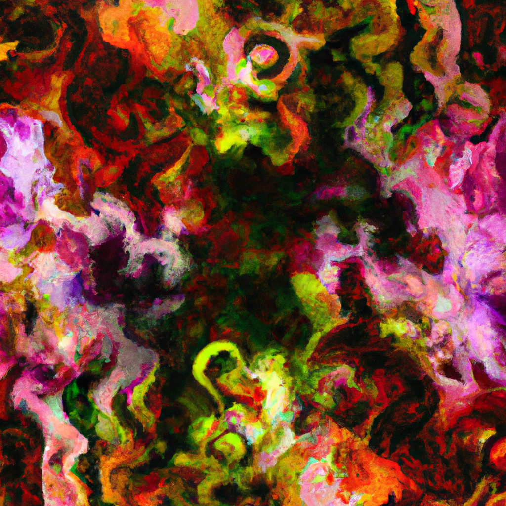

Storytelling is about the soul of humanity.
Storytelling is at the very core of humanity. From ancient times, stories have been told with the purpose of entertaining, teaching and inspiring people. It has been used to preserve the memories of our ancestors, to help the community understand and shape the future.
In this blog, I will talk about the power of storytelling, and how it can be used to create content from different disciplines. We'll explore the emotional power of stories, how stories shape our society, and why they are so important.
When it comes to creative writing, I believe that the key to success is finding your own truth and expressing it through your work. Therefore, I will also talk about methods to train and develop your creativity, so you can find and express yourself in your work. I will cover topics such as writing exercises, tools and techniques, and how to use Artificial intelligence for content creation.
Most importantly, this blog will be opinionated. I will not be afraid of taking a stand on controversial issues, and I will always strive to surprise my readers with new facts or with a new perspective on known facts.
Whether you are an aspiring writer or a veteran reader, I invite you to come on this journey with me. Together, we will learn, explore and be inspired by the soul of storytelling.